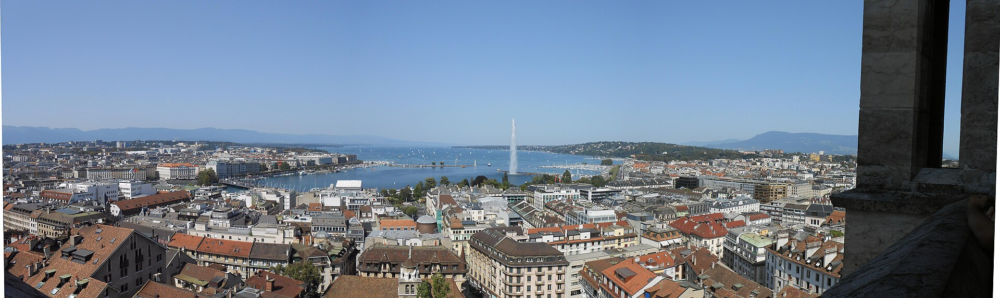

Ruta 01
La Ginebra que explica la ciudad
Combina Reforma, diplomacia, lago y vida cotidiana sin depender de una reserva escasa. Es la mejor primera visita.

Casco antiguo y lago
Catedral de Saint-Pierre y torres · 75–90 min
El interior austero permite leer el giro protestante de Ginebra; las 157 escaleras de la torre devuelven el lago y los tejados al relato urbano. El viernes abre 09:30–18:30 y las torres cierran a las 18:00; iglesia gratuita y torres 7 CHF · 7,48 €. Si llegáis después de las 17:15, dejad la subida para el lunes.
Bourg-de-Four, Hôtel de Ville y Parc des Bastions · 90 min
La plaza más antigua, los pasajes municipales y el Muro de los Reformadores explican cómo una pequeña república convirtió ideas religiosas en identidad política. Son exteriores gratuitos y permiten recortar la tarde sin perder una entrada.
Pont du Mont-Blanc y Jet d’Eau · 60 min
El paseo sitúa la ciudad en la salida del Ródano y ofrece la imagen esencial del chorro de 140 metros. La plataforma es gratuita y exterior; el Jet puede detenerse por viento o mantenimiento.
Ginebra internacional
Museo Internacional de la Cruz Roja · 2 h
Testimonios, objetos y diseño expositivo convierten la acción humanitaria en una historia de decisiones concretas, no en propaganda institucional. Sábado 10:00–17:00; entrada 15 CHF · 16,02 €, audioguía española +2 CHF · 2,14 € opcional. El Geneva City Pass lo incluye.
Place des Nations y Palais des Nations por fuera · 75 min
La Broken Chair enfrenta simbólicamente a las instituciones con el coste humano de las minas antipersona; las fachadas y banderas sitúan el papel diplomático de Ginebra. El paseo exterior es gratuito. No busquéis reventa para entrar en la ONU.
Jardín Botánico y Museo de Historia de las Ciencias · 2 h 30 min
El jardín cambia el ritmo de la zona institucional y sus colecciones vivas continúan hasta la orilla. La villa Bartholoni conserva instrumentos científicos en el lugar donde el paisaje del lago vuelve a ser protagonista. Ambos son gratuitos; museo 10:00–17:00 y jardín 08:00–19:30.
Relojería, mercado y baños
Mercado de Plainpalais y Jonction · 2 h
El mercadillo dominical muestra una Ginebra menos institucional entre libros, objetos y puestos de comida; después, la confluencia del Arve y el Ródano revela dos colores de agua antes de mezclarse. Mercado aproximadamente 08:00–17:00; recorrido gratuito.
Patek Philippe Museum · 2 h 30 min
Más de cinco siglos de relojería permiten entender por qué el oficio importa en Ginebra más allá del lujo: miniaturización, astronomía y artes decorativas avanzan juntos. Domingo 14:00–18:00; 10 CHF · 10,68 €. La recepción garantiza venta el mismo día y no se permite fotografiar.
Bains des Pâquis · 60–90 min
La plataforma de baño es una institución social y uno de los mejores miradores del Jet d’Eau al final del día. En septiembre la playa abre 10:00–18:00, según meteorología; cuesta 2 CHF · 2,14 €. El espacio de bienestar no reabre hasta el 20 de septiembre.
Carouge o aeropuerto
Desayuno, equipaje y aeropuerto. No añadáis visitas.
09:30–11:30 paseo por Carouge: plazas bajas, talleres y trazado de raíz sarda, todo exterior y gratuito. Si la torre de Saint-Pierre quedó pendiente, sustituid Carouge y entrad a las 09:30.